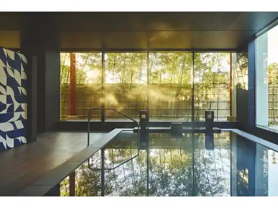
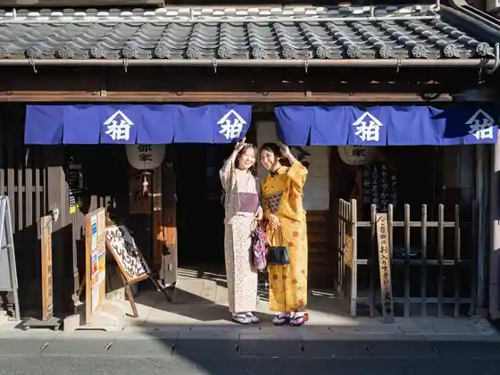
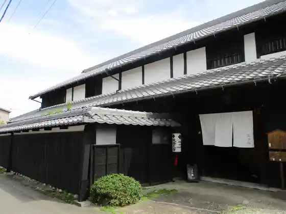

Kokuho Inuyama Shiro
Inuyama, Aichi · 0568-61-1711 · Official / source link
Inuyama Onsen
Inuyama, Aichi · 0568-61-6000 · Official / source link

Kyu Isobe Ie House
Inuyama, Aichi · 0568-65-3444 · Official / source link

Kyu Horibe Ie House
Inuyama, Aichi · 0568-90-3744 · Official / source link

IMASEN Inuyama Karakuri Museum Tamaya Shobe Workshop (Inuyama Bunkashi Ryo Kan Minamidate)
Inuyama, Aichi · 0568-61-3932 · Official / source link
Saitohamu
Inuyama, Aichi · 0568-61-5559 · Official / source link
Hari Tsuna Shrine
Inuyama, Aichi · 0568-61-0180 · Official / source link
YHA Rafuteingu
Inuyama, Aichi · 0568-67-3910 · Official / source link
Sanko Inari Shrine
Inuyama, Aichi · 0568-61-0702 · Official / source link
Donden Kan
Inuyama, Aichi · 0568-65-1728 · Official / source link
O Kashi no Shiro
Inuyama, Aichi · 0568-67-8181 · Official / source link
Jakko In
Inuyama, Aichi · 0568-61-0035 · Official / source link
Narita Yamadai Hijiri Tera
Inuyama, Aichi · 0568-61-2583 · Official / source link
Shiro Tomachi Museum (Inuyama Bunkashi Ryo Kan)
Inuyama, Aichi · 0568-62-4802 · Official / source link
Nippon Garden Yuraku En (Kokuho Chashitsu (Jo Iori))
Inuyama, Aichi · 0568-61-4608 · Official / source link
Momotaro Shrine
Inuyama, Aichi · 0568-61-1586 · Official / source link
Dai Ken Shrine
Inuyama, Aichi · 0568-67-1017 · Official / source link
Inuyama Castle Town
Inuyama, Aichi · 0568-61-6000 · Official / source link
Yagai Minzoku Museum Ritoruwarudo
Inuyama, Aichi · 0568-62-5611 · Official / source link
Nippon Monkii Center
Inuyama, Aichi · 0568-61-2327 · Official / source link
Nippon Monkii Park
Inuyama, Aichi · 0568-61-0870 · Official / source link
Museum Meiji Village
Inuyama, Aichi · 0568-67-0314 · Official / source link